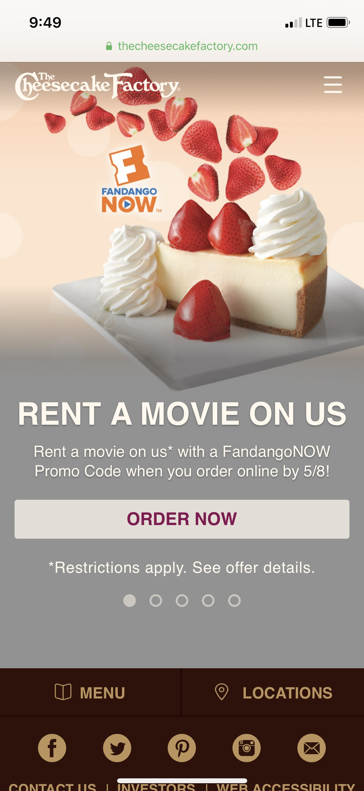
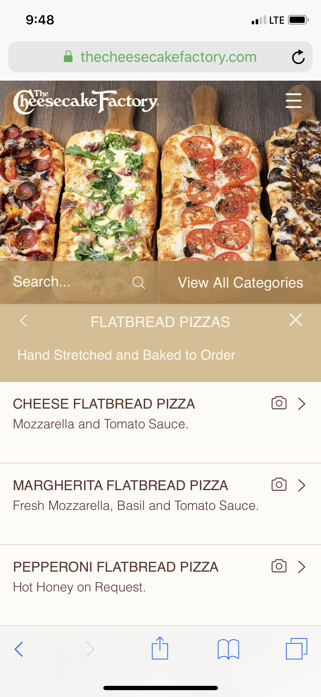

For the user test of a mobile website I chose the same as one as Project 3 which was for the Cheesecake Factory Restaurant site. Again this is a standard restaurant across the country and I think it is easy to find in most cities. I chose 3 people to test the site and made sure they had all heard of the Cheesecake Factory and out of the 3 just 1 person had not eaten there. Person 1 is a 52-years-old woman living in Miami. Person 2 is 32-year-old woman living in El Paso, TX, and person 3 is male, has never eaten at the Cheesecake Factory, is living in Seattle and is age 31. Each of the testers were most interested in making sure the menu screen was proportional with their phones and 2 out of 3 voiced concerns that mobile sites for restaurants were more tedious to navigate as opposed to them on a PC. These 2 issues will be the focus for getting feedback from them.
Testing Script
1. How easy does the Home Page seem for you?
2. How does the overall site look on your phone? Is is Proportioned?
3. How easy is it to navigate the menu and learn about their items?
4. What would you change?
User Experience By Testers
The front page had a scroll gallery each with different features about the restaurant. The first being order now. At first one of the users who had never been to Cheesecake Factory, was confused by this thinking they were mainly delivery which I explained they have never been until now that a third party has picked them up for food delivery. Each tester was able to find the menu easily at the top right drop down with the being the first option and the Locations being the second. The location settings were much easier to find on the mobile site rather than the PC since the drop down was set up in a much better order.
The menu itself was much better to look at as well. Instead of the limited small screen pop up on the PC site, the mobile site has it broken down nicely where you choose a type of plate, let’s say pasta, then choose from the pasta dishes and that leads to what is in it and what the sides are. This past was pleasant and one of the testers eve commented on how they like the colors and of the menu because they are neutral and not distracting. One complaint I had from 2 of the testers was the fact that when going back and forth through the menu, the phone continuously asked for the location. One tester pointed out that they do not experience this much with other restaurant sites.
User Results and Suggestions
All the testers found the site easy to navigate and rated it with a positive user experience. I received much better feedback about it than I did the PC site. The proportion on all phones was just perfect as well. One user did suggest to have the scroll gallery open with entering your location rather than ordering food for delivery. It seems that that would be much more used than the delivery since it is better known as family restaurant. The menu itself was the part they all agreed was great considering how long their options can be.